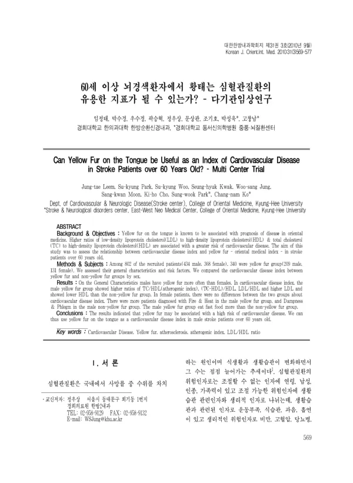

60세 이상 뇌경색환자에서 황태는 심혈관질환의 유용한 지표가 될 수 있는가? - 다기관임상연구
Leem Jt, Park Sk, Woo Sk, Kwak Sh, Jung Ws, Moon Sk, Cho Kh, Park Sw, Ko Cn
The Journal of Internal Korean Medicine 31(3):569-577

첫 장 · 오픈액세스First page · open access
논문 소개Summary
황태, 곧 누런 설태는 한의학에서 열증을 나타내는 지표이고 몸 안에 염증이나 감염이 있을 때 많이 나타난다고 봅니다. 한편 동맥경화 병변의 변화는 주로 염증성이어서 근래에는 동맥경화의 병인 자체를 염증으로 설명하며, 염증의 정도가 건강한 사람과 심혈관질환자 모두에서 독립적인 예후 인자로 작용한다는 것이 밝혀졌습니다. 그렇다면 설진으로 손쉽게 보는 황태가 심혈관질환의 위험을 가리킬 수 있는지 물을 만합니다. 이 논문이 그 물음을 다기관 자료로 확인합니다.
여러 기관에서 모은 802명(남 434명·여 368명) 가운데 340명(남 209명·여 131명)이 황태군이었습니다. 60세 이상 뇌경색 환자를 황태군과 비황태군으로 나누어 일반적 특성과 위험인자, 생활습관을 성별로 갈라 견주고 심혈관질환 지표를 비교했습니다.
남성이 여성보다 황태가 더 자주 나타났습니다. 심혈관질환 지표에서는 남성 황태군이 총콜레스테롤/HDL 비와 (총콜레스테롤−HDL)/HDL 비, LDL/HDL 비가 유의하게 높고 LDL 이 높은 반면 HDL 은 낮았습니다. 여성에서는 두 군 사이에 심혈관질환 지표의 차이가 없었습니다. 변증 분류에서 황태군은 화열변증이 37.7%로 가장 많았고 비황태군은 습담변증이 46.7%로 가장 많아, 황태를 화열의 지표로 두는 기존 관점과 맞았습니다. 생활습관에서는 남성 황태군에 주 1회 이상 패스트푸드를 먹는 사람이 더 많았습니다.
저자들은 황태가 몸 안의 염증 상태를 반영하고 염증이 있는 사람에서 심혈관 위험이 높아지는 것으로 이 결과를 풀었습니다. 여성에서 상관이 없었던 데 대해서는 두 가지를 함께 적었습니다. 여성의 황태가 남성과는 다른 기전으로 나타날 가능성이 하나이고, 이 자료에서 여성의 황태 비율이 남성보다 낮았는데도 여성에게 허혈성 심장질환 과거력이 많아 선택 바이어스가 작용했을 가능성이 다른 하나입니다. 그래서 60세 이상 여성에서 황태가 지표가 되지 못한다고 결론짓기에는 수가 모자란다고 밝혔습니다.
단면 연구라 인과를 확정할 수 없고, 결과가 60세 이상 남성 뇌경색군에 한정되어 전체 뇌경색 환자에 일반화하지 못한다는 점도 그대로 적었습니다. 그럼에도 손쉬운 설진으로 60세 이상 남성 뇌경색 환자의 심혈관 위험을 가늠할 수 있음을 한의계에서 처음 보인 논문이고, 황태와 패스트푸드 섭취의 관련은 이전에 보고된 적이 없어 식습관과 설태를 함께 보는 전향 연구가 필요하다고 덧붙였습니다.
Yellow fur on the tongue is read in Korean medicine as a sign of a heat pattern, appearing when inflammation or infection is present in the body. Meanwhile the changes seen in atherosclerotic lesions are largely inflammatory, so recent work explains the aetiology of atherosclerosis as inflammation itself, and the degree of inflammation has been shown to act as an independent prognostic factor in the healthy and in cardiovascular patients alike. It is therefore worth asking whether yellow fur, seen easily on tongue examination, can point to cardiovascular risk. This paper puts that question to multicentre data.
Of 802 patients gathered across several hospitals (434 men and 368 women), 340 fell into the yellow fur group (209 men and 131 women). Stroke patients over 60 were divided by the presence of yellow fur, and their general characteristics, risk factors and lifestyle compared by sex, along with cardiovascular indices such as the ratio of total to HDL cholesterol.
Yellow fur appeared more often in men than in women. Among the cardiovascular indices, men with yellow fur had significantly higher total cholesterol to HDL, (total cholesterol minus HDL) to HDL, and LDL to HDL ratios, with higher LDL and lower HDL. In women the two groups did not differ on any cardiovascular index. By pattern, fire-heat was the commonest in the yellow fur group at 37.7%, and dampness-phlegm the commonest in the non-yellow group at 46.7%, matching the existing view that places yellow fur with fire-heat. On lifestyle, men with yellow fur more often ate fast food at least once a week.
The authors read the result as yellow fur reflecting an inflammatory state, with inflammation in turn raising cardiovascular risk. On the absence of any relation in women they offered two possibilities together: that yellow fur may arise by a different mechanism in women, and that selection bias may have operated, since women in this sample showed a lower rate of yellow fur than men yet carried more history of ischaemic heart disease. They therefore state that the numbers are too small to conclude that yellow fur fails as an index in women over 60.
They also record that, being cross-sectional, the study cannot fix causation, and that the finding is confined to men over 60 with cerebral infarction and cannot be generalised to all such patients. Even so, this is the first paper in Korean medicine to show that a simple tongue examination can gauge cardiovascular risk in this group, and the link between yellow fur and fast-food intake had not been reported before, so the authors call for prospective study of diet and tongue fur together.
인용Cite
Leem Jt, Park Sk, Woo Sk, Kwak Sh, Jung Ws, Moon Sk, Cho Kh, Park Sw, Ko Cn. 60세 이상 뇌경색환자에서 황태는 심혈관질환의 유용한 지표가 될 수 있는가? - 다기관임상연구. The Journal of Internal Korean Medicine. 2010;31(3):569-577.